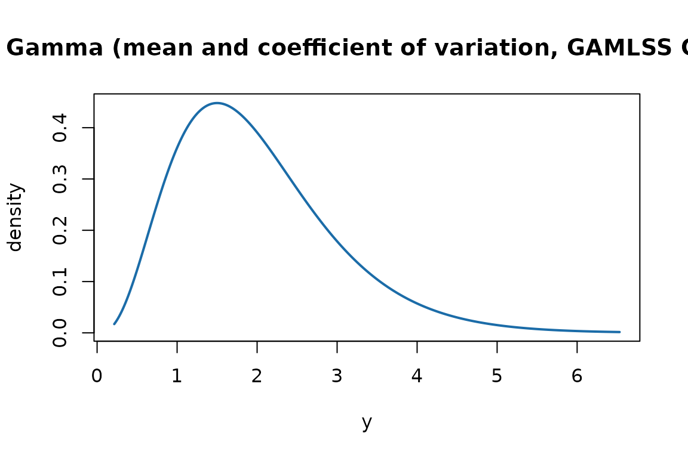
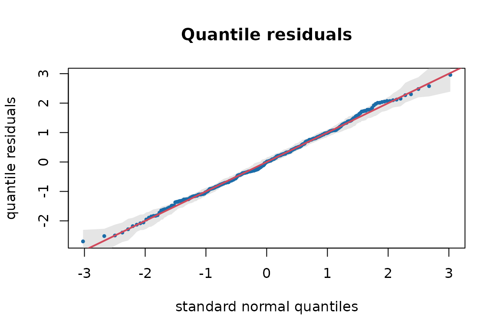

regcompR fits distributional regression models: every parameter of a
response distribution can depend on covariates through its own formula.
The same model specification can be fitted by maximum likelihood
(engine = "ml"), through TMB ("tmb"), or by
Bayesian inference in Stan, JAGS or OpenBUGS ("bayes").
Distributions
Every family lives in a registry that records its support, parameters, links, moments and references.
length(families())
#> [1] 278
head(families("count"), 10)
#> [1] "bell" "beta_negative_binomial"
#> [3] "borel" "borel_tanner"
#> [5] "conway_maxwell_poisson" "conway_maxwell_poisson_mean"
#> [7] "delaporte" "discrete_compound_poisson"
#> [9] "discrete_phase_type" "discrete_weibull"
d <- distribution("gamma", mu = 2, sigma = 0.5)
prob(d, c(1, 2, 3))
#> [1] 0.3608941 0.3907336 0.1784702
quantile(d, c(0.1, 0.5, 0.9))
#> [1] 0.8723848 1.8360304 3.3403915
plot(d)
A first regression
The first formula is the main formula (it models the mean parameter, or the location or scale parameter where there is no mean). Further formulas name the parameter on their left side.
n <- 400
dat <- data.frame(x = runif(n), z = rnorm(n))
dat$y <- rgamma(n, shape = 1 / (0.3 + 0.4 * dat$x)^2,
scale = exp(1 + dat$x) * (0.3 + 0.4 * dat$x)^2)
fit <- regcomp(y ~ x, sigma ~ x, family = "gamma", data = dat)
summary(fit)
#> <regcomp_fit> Gamma (mean and coefficient of variation, GAMLSS GA) regression, engine 'ml' (frequentist)
#> mu (log link): ~x
#> sigma (log link): ~x
#> log likelihood -834.535 on 4 parameters, n = 400
#>
#> Wald estimates with 95% confidence intervals:
#> estimate std_error lower upper z p_value
#> mu:(Intercept) 0.9264 0.0409 0.8464 1.0065 22.6749 0
#> mu:x 1.1018 0.0915 0.9225 1.2811 12.0425 0
#> sigma:(Intercept) -1.1440 0.0711 -1.2833 -1.0047 -16.0939 0
#> sigma:x 0.8843 0.1240 0.6413 1.1273 7.1324 0
#> max |gradient| 4.34e-06; Hessian positive definiteSpecifying the model
-
links =changes the link of a parameter (links()lists them); -
fixed =holds a parameter at a known value; -
weights =multiplies each log likelihood contribution; -
subset =selects rows (a logical or index vector); - data parameters (trial counts, known minima) are given by name, as
size = nfor the binomial; -
offset()enters a term with coefficient one; -
parameterization =chooses among parameterizations of a law (get_family("gamma", "rate")); -
y ~ .uses every other column.
f_link <- regcomp(y ~ x, sigma ~ 1, family = "gamma", data = dat, links = list(mu = "identity"))
f_fix <- regcomp(y ~ x, family = "gamma", data = dat, fixed = list(sigma = 0.5))
f_sub <- regcomp(y ~ x, family = "gamma", data = dat, subset = dat$x > 0.2, weights = rep(2, n))
f_rate <- regcomp(y ~ x, family = "gamma", parameterization = "rate", data = dat)
names(coef(f_rate))
#> [1] "shape:(Intercept)" "rate:(Intercept)" "rate:x"
bd <- data.frame(n = rpois(50, 10) + 1, x = rnorm(50))
bd$k <- rbinom(50, bd$n, plogis(0.3 * bd$x))
coef(regcomp(k ~ x, family = "binomial", size = n, data = bd))
#> prob:(Intercept) prob:x
#> 0.08711978 0.48937544Rows with a missing or non finite value in anything the model
evaluates (the response, a transformed covariate such as
log(x), a weight or a data parameter) are left out, as with
glm(). The fit stores its analysis rows, and cross
validation and clustered covariances use exactly those rows.
dm <- dat; dm$x[3] <- NA; dm$z[5] <- -1
fm <- regcomp(y ~ x + log(z + 1), family = "gamma", data = dm)
nobs(fm)
#> [1] 334
head(fm$rows)
#> [1] 1 2 4 6 7 8regcomp_control() sets the optimizer
(maxit, rel_tol, restarts,
start values), the Laplace inner problem, the proximal
solver of lasso type penalties and the MCMC settings.
f_ctl <- regcomp(y ~ x, family = "gamma", data = dat,
control = regcomp_control(restarts = 2, start = list(mu = c(1, 1))))
f_ctl$diagnostics[c("converged", "max_abs_gradient")]
#> $converged
#> [1] TRUE
#>
#> $max_abs_gradient
#> [1] 0.0005456312Methods for fitted models
coef(fit)
#> mu:(Intercept) mu:x sigma:(Intercept) sigma:x
#> 0.9264462 1.1017963 -1.1440085 0.8843013
sqrt(diag(vcov(fit)))
#> mu:(Intercept) mu:x sigma:(Intercept) sigma:x
#> 0.04085773 0.09149227 0.07108316 0.12398398
confint(fit)
#> lower upper
#> mu:(Intercept) 0.8463666 1.006526
#> mu:x 0.9224747 1.281118
#> sigma:(Intercept) -1.2833289 -1.004688
#> sigma:x 0.6412972 1.127305
logLik(fit); AIC(fit); BIC(fit); nobs(fit)
#> 'log Lik.' -834.5354 (df=4)
#> [1] 1677.071
#> [1] 1693.037
#> [1] 400
formula(fit)
#> $mu
#> y ~ x
#>
#> $sigma
#> sigma ~ x
#>
#> attr(,"given")
#> [1] "mu" "sigma"
head(fitted(fit))
#> 1 2 3 4 5 6
#> 3.383744 3.805514 4.747480 6.869602 3.153959 6.795691residuals() gives randomized quantile
("quantile", the default), "pit",
"response" and "pearson" residuals.
Predictions
predict() returns the distribution parameters
("parameter"), the linear predictors ("link"),
"mean", "variance", "sd",
"median", "quantile",
"probability" (mass or density at at),
"density", "cdf" and "survival",
with optional confidence intervals.
nd <- data.frame(x = c(0.1, 0.5, 0.9))
predict(fit, nd, type = "parameter")
#> mu sigma
#> 1 2.819687 0.3479911
#> 2 4.381295 0.4956636
#> 3 6.807758 0.7060019
predict(fit, nd, type = "link")
#> mu sigma
#> 1 1.036626 -1.0555783
#> 2 1.477344 -0.7018578
#> 3 1.918063 -0.3481373
predict(fit, nd, type = "mean", interval = "confidence")
#> estimate lower upper
#> 1 2.819687 2.630571 3.022294
#> 2 4.381295 4.161368 4.596050
#> 3 6.807758 6.083452 7.530586
predict(fit, nd, type = "variance")
#> 1 2 3
#> 0.9628044 4.7160572 23.1004285
predict(fit, nd, type = "sd")
#> 1 2 3
#> 0.981226 2.171648 4.806291
predict(fit, nd, type = "median")
#> [1] 2.706721 4.028190 5.716167
predict(fit, nd, type = "quantile", probs = c(0.05, 0.95))
#> q0.05 q0.95
#> [1,] 1.421599 4.603350
#> [2,] 1.514725 8.453764
#> [3,] 1.214368 16.131578
predict(fit, nd, type = "density", at = 5)
#> density(5)
#> [1,] 0.04336816
#> [2,] 0.15196897
#> [3,] 0.09947143
predict(fit, nd, type = "cdf", at = 5)
#> cdf(5)
#> [1,] 0.9731764
#> [2,] 0.6688594
#> [3,] 0.4313105
predict(fit, nd, type = "survival", at = 5)
#> survival(5)
#> [1,] 0.0268236
#> [2,] 0.3311406
#> [3,] 0.5686895fitted_distribution() returns the fitted law of each row
as a distribution object; simulate() draws new responses;
log_lik() gives pointwise log likelihoods.
Checking the fit
plot(fit, which = "qq")
plot(fit, which = "effects", variable = "x", par = "sigma")Where to go next
-
vignette("distributions"): the registry and distribution objects. -
vignette("operators"): inflation, hurdles, mixtures, truncation, generated families and custom families. -
vignette("count-models"): overdispersion, zeros and the count families. -
vignette("hierarchical-longitudinal"): random effects, covariance structures, smooth terms and GEE. -
vignette("ordinal-categorical"): ordinal, nominal, bivariate binary and selection models. -
vignette("survival"): censoring, truncation, cure models and discrete time hazards. -
vignette("regularization"): penalized and bias reduced estimation. -
vignette("model-checking"): residuals, scoring rules, cross validation and comparison. -
vignette("bayesian"): priors, generated Stan and BUGS programs and Bayesian fitting.